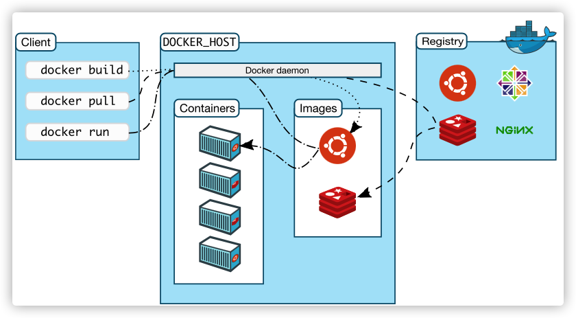
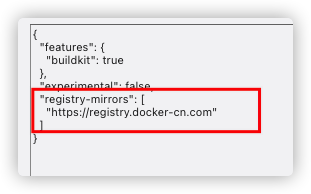
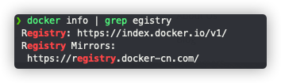
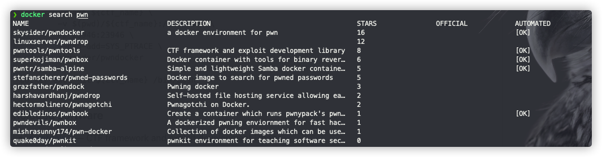
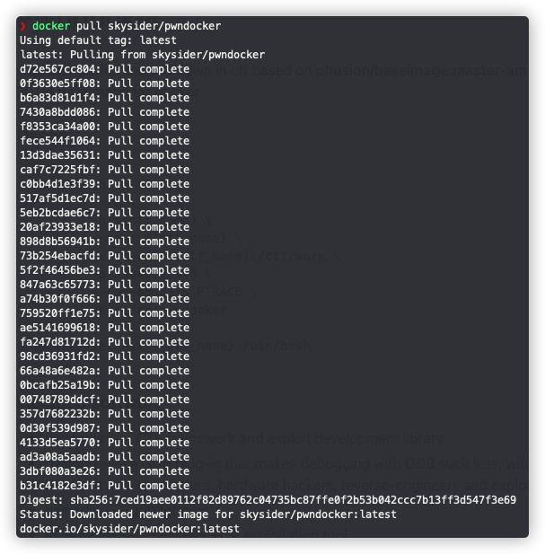
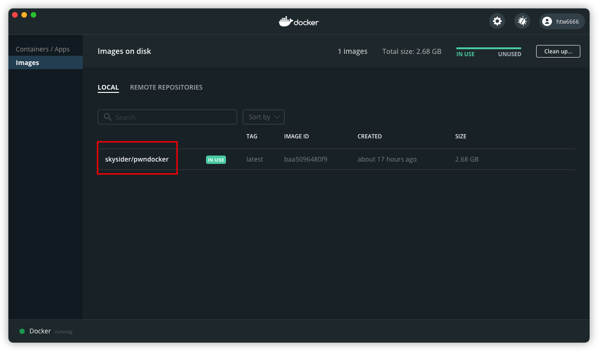

之前本来假期准备写一下Docker用法的，但是后来写毕设忘了，正要用到顺便记一下。
Overview
Docker是一个使用cs架构的应用级别的虚拟化服务；
一个docker的container就是一个简单的进程，增加了一点隔离机制和与docker daemon交互的机制；每一个container与它自己独立私有的文件系统交互，这个文件系统是由Docker image来提供的。Docker image提供了这个进程运行起来需要的所有内容，文件系统、代码、依赖库等等。

Docker核心的就是Cotainer和Image两个概念，以及这两个之间的转化
把它理解成进程和二进制文件的关系就差不多了
Get Started
安装Docker略
0x01 配置源
安装之后首先要添加源，否则再Pull的时候从官网速度会很慢

在mac的docker配置文件中需要增加这样的一行
配置好之后在docker info里可以看到

这里设置mirrors已经变成了cn的源
0x02搜索镜像
以配置pwn的docker为例
首先可以在dockerhub进行搜索
1 | docker search pwn |
可以看到一个列表

我们就直接用最上面那个star最多的
0x03 下载镜像到本地
1 | docker pull skysider/pwndocker |
这个指令从远程会从远程下载image到本地

执行后会分别pull其中的各个组件
完成之后在docker客户端的dashboard中可以看到下载了的镜像

0x04 创建container
container和image的关系就像是进程（process）和二进程序（binary）之间的关系
1 | docker run -itv /Users/pwn/Downloads:/ctf/work --name pwndocker skysider/pwndocker /bin/bash |
这样一个指令就会创建一个新的container，这里给这个新创建的container命名为了pwndocker，并且还做了一个事情就是文件的映射，这里将host机上的/Users/pwn/Downloads映射到了这个container的文件系统中的/ctf/work这个目录
最后/bin/bash是实际运行起来的进程，也可以改成其他想运行的进程比如/usr/bin/tmux, /bin/zsh等等
0x05 连接到旧的container
如果是想要连接到之前创建过的container，而不是新创建一个
那么可以首先查看目前系统中存在哪些docker的container
1 | docker ps -a |
加上-a之后是列出所有的container，去掉-a只会显示在运行的
确定了名字、container ID之后
1 | docker start -ai pwndocker |
可以先让这个docker运行起来，并且直接attach到这个进程
0x06 其他操作
其他常用的操作可能包括删除、列出image、列出container等等
这些指令的操作方法和unix的bash比较类似，很符合直觉，不需要太多阐述
1 | docker image ls |
在Mac上Docker下载的Image放在
/Users/用户名/Library/Containers/Docker/Data/vms/
默认放在笔记本内置的主盘上，还是挺占空间的